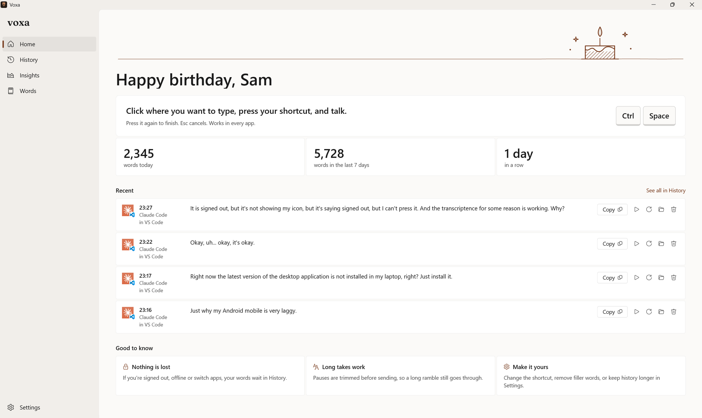

<!doctype html><meta charset="utf-8"><title>Voxa desktop Home: old and new</title>
<style>body{margin:0;padding:24px;background:#EDEAE6;font-family:"Segoe UI",sans-serif;color:#1A1A1A}
h2{margin:4px 0 12px;font-size:20px}figure{margin:0 0 28px;background:#fff;border-radius:10px;padding:12px;box-shadow:0 2px 10px rgba(0,0,0,.08);display:inline-block;vertical-align:top}
figcaption{font-weight:600;margin-bottom:8px}figcaption span{font-weight:400;color:#555;font-size:13px;margin-left:8px}
.old img{width:1100px;display:block}.new iframe{width:1600px;height:980px;border:0;transform:scale(.6875);transform-origin:0 0;margin:0 -500px -306px 0}</style>
<figure class="old"><figcaption>Old <span>the real 1.0.0 window today</span></figcaption></figure>
<figure class="new"><figcaption>New <span>bigger doodle beside the greeting, stats first, help card under Good to know (live preview)</span></figcaption><iframe src="v7-desktop-home-new.html"></iframe></figure>
